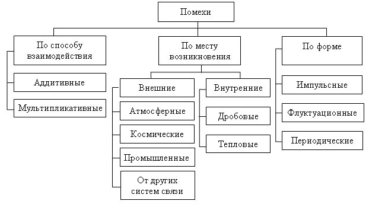
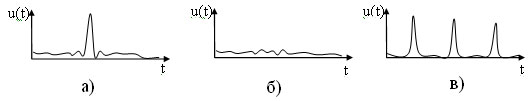
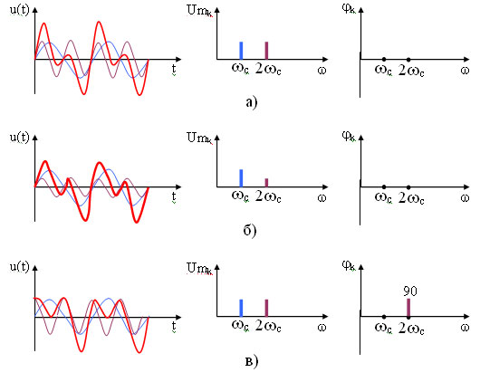
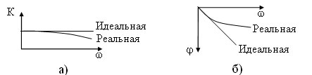
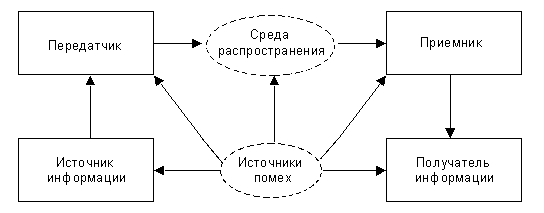

1 Цель работы
Изучение характера влияния периодических помех и флуктуационного шума на качество телевизионного изображения, передаваемого посредственно аналоговым или цифровым сигналами. Измерение отношения сигнала к помехе. Исследование заметности периодической помехи в зависимости от соотношения между частотами помехи и развертки. Учет визуального восприятия шумов при их измерении
2. Теоретические сведения
Помехи и искажения в каналах электросвязи
Помеха — всякое постороннее воздействие на полезный сигнал, оказывающее мешающее действие при его приеме и проявляющее себя изменением его формы.
Классификация помех приведена на рисунке 1.
Аддитивной является сумма полезного сигнала Sм(t) и помехи N0(t):
Z(t)=Sм(t)+N0(t)
Мультипликативной является произведение полезного сигнала и помехи:
Z(t)=Sм(t)*N0(t)

Рис. 1 - Классификация помех
Внешними являются помехи, возникающие вне канала, к ним относятся:
§ атмосферные возникают в атмосфере земли и могут быть вызваны грозовыми разрядами, осадками, пылевыми бурями, северным сиянием;
§ космические возникают в космическом пространстве и могут быть вызваны солнечной активностью, космическими телами;
§ промышленные могут быть вызваны промышленными установками: высокочастотными генераторами, высоковольтными линиями электропередачи, электрифицированным транспортом;
§ от других систем связи обуславливаются воздействием на полезный сигнал одной системы связи сигналов других систем, например, прослушивание радиопередач или другого разговора в телефонной трубке, прием на одной частоте срезу нескольких радиопередач.
Внутренними являются помехи, возникающие внутри канала, к ним относятся собственные шумы, которые, в свою очередь, подразделяются на:
§ тепловые — обусловлены хаотическим движением электрических зарядов в проводниках;
§ дробовые — обусловлены неоднородной плотностью носителей заряда в проводниках.
Собственные шумы не могут быть устранены, т. к. они вызваны физикой процесса передачи электрической энергии. Импульсными помехами являются сконцентрированные по времени скачки тока или напряжения (рисунок 2а). Флуктуационные помехи вызваны флуктуациями (отклонением от среднего значения) тока и напряжения (рисунок 2б). Периодические помехами являются периодические скачки тока или напряжения (рисунок 2в).

Рис 2 – Виды помех по форме: а) импульсные, б) флуктуационные, в) периодические
Собственные шумы канала являются флуктуационными помехами и имеют спектральную плотность мощности равномерно распределенную во всех диапазонах частот используемых для электросвязи (0…1014 Гц). По аналогии с белым светом, имеющем в своем спектре составляющие на всех частотах, данные шумы называются белым шумом.
При прохождении сигнала через систему связи и при воздействии на него помехи его форма изменяется. Изменение формы сигнала называется искажением.
Различают нелинейные и линейные искажения.
Нелинейными являются искажения, при которых в спектре сигнала появляются новые составляющие. Такие искажения вызваны нелинейностью характеристик элементов и блоков, входящих в аппаратуру системы связи.
Линейными являются искажения, при которых в спектре сигнала не появляются новые составляющие. Такие искажения возникают из –за изменения соотношения между составляющими спектра сигнала. Линейные искажения бывают амплитудно-частотными (АЧИ), при которых изменяются амплитуды составляющих спектра сигнала и фазо-частотные (ФЧИ), при которых изменяются фазы составляющих спектра. На рисунке 3а приведен сигнал являющийся результатом сложения двух гармонических сигналов с одинаковыми амплитудами и фазами и отличающимися друг от друга частотами (обозначен толстой линией). Соответственно в спектре данного сигнала присутствует две гармонических составляющих на частотах wс и 2wс. На рисунке 3б уменьшилась амплитуда второй гармоники, в результате чего изменилась форма сигнала, т. е. произошли амплитудно-частотные искажения. На рисунке 3в изменилась фаза второй гармоники на 90°, в результате чего, опять произошло изменение формы сигнала, т. е. произошли фазо-частотные искажения. Как видно из диаграмм в спектре сигнала и в первом и во втором случае новые составляющие не появились, хотя форма сигнала изменилась.

Рисунок 3 - Линейные искажения: а) сигнал; б) амплитудно-частотные искажения; в) фазо-частотные искажения
АЧИ объясняются не равномерностью коэффициента передачи для различных составляющих спектра сигнала. При идеальной АЧХ коэффициент передачи одинаков для всех составляющих спектра сигнала и АЧИ отсутствуют. Реальная АЧХ четырехполюсника с увеличением частоты имеет спад (рисунок 4а), что приводит к уменьшению амплитуды высокочастотных составляющих спектра сигнала и соответственно к АЧИ.
ФЧИ вызваны неодинаковым временем задержки tз=j/w для составляющих различных частот. При идеальной ФЧХ время задержки для всех составляющих одинаковое и ФЧИ отсутствуют. Реальная ФЧХ имеет подъем на высоких частотах, поэтому время задержки для высокочастотных составляющих меньше чем для низкочастотных и появляются ФЧИ (рисунок 4б).

Рисунок 4 - Характеристики четырехполюсника: а) АЧХ; б) ФЧХ
Компенсация АЧИ и ФЧИ осуществляется специальными устройствами — корректорами.
Схема системы передачи информации. Каналом передачи информации является совокупность средств, используемых для этой цели. Радиотехническим каналом связи называется канал передачи информации с помощью электромагнитных колебаний.
Устройство, преобразующее информацию в электромагнитное высокочастотное колебание (радиосигнал), называется радиопередатчиком, а устройство, преобразующее принятый радиосигнал в информацию – радиоприемником. При прохождении радиосигнала от передатчика к приемнику по среде распространения (провод, волновод, свободное пространство) его параметры могут изменяться, в том числе и под влиянием различного рода помех. На рис.5 показана обобщенная блок-схема система передачи информации, из которой видно, что помехи могут оказывать влияние не только на сигнал, сформированный передатчиком, но и на сигнал, обрабатываемый приемником.

Рис. 5 - обобщенная блок-схема система передачи информации
В радиотехнической системе сигналы подвергаются различным преобразованиям. Некоторые из них являются обязательными для всех систем, независимо от назначения и характера передаваемой информации. Передаваемый по каналу связи сигнал подвергается воздействию помех. Источниками внешних помех являются атмосферные явления, шумы космического пространства, индустриальные помехи, помехи других каналов связи и пр.
Внутренние помехи возникают вследствие дискретной природы заряженных частиц, а также из-за несовершенства аппаратуры.
Под действием помех сигнал, проходя через канал связи, искажается. Поэтому одной из задач при организации канала связи является повышение помехоустойчивости канала.
Для увеличения потока информации, передаваемого одним каналом связи, применяют частотное или временное разделение каналов в одной линии связи. При частотном разделении каналов одно несущее колебание используется для передачи нескольких заранее промодулированных разными частотами сообщений. Эти частоты называются поднесущими. В приемнике радиосигнал детектируется, разделяется фильтрами, и каждый канал затем еще раз детектируется, выделяя свое низкочастотное сообщение.
При временном разделении каналов сообщения поочередно модулируют несущее колебание независимо от назначения и характера передаваемой информации.
Помехозащищенность видеосистемы. Среди многих параметров и характеристик видеосистемы, от которых зависит качество воспроизводимого изображения, важным является помехозащищенность, оцениваемая отношением сигнала к помехе (ОСП), которое измеряется в тракте передачи видеосигналов, т.е. до модулятора на передающей стороне видеосистемы или после видеодетектора приемника. Поэтому необходимо понимать характер влияния различных помех на качество изображения и правильно измерять ОСП.
Виды помех. Помехи по-разному проявляют себя в видеотракте и на изображении. В зависимости от характера воздействия на сигнал различают аддитивные и мультипликативные помехи. Аддитивные помехи, проникая в тракт, суммируются с видеосигналом, мультипликативные – возникают только в процессе передачи видеосигнала и вызывают регулярные или нерегулярные изменения коэффициента передачи канала (уровня сигнала). В первом случае видеосигнал на выходе тракта (или какого-либо устройства) можно записать в виде * UВ (t) = UВ (t)+Uпом(t), во втором – * UВ (t) = UВ (t) · r(t), где r(t) – множитель, учитывающий влияние мультипликативной помехи (например, замираний, возникающих при распространении радиосигнала).
В видеотракте существуют три основных вида помех: периодические, импульсные (непериодические) и флуктуационные. Первый и второй виды помех порождаются преимущественно внешними устройствами. При этом, если они создаются непреднамеренно во время работы различных электрических и радиоустройств, их считают индустриальными радиопомехами. Источниками таких помех могут быть другие радиостанции, в том числе и телевизионные (например помехи от соседних и зеркальных каналов), электродвигатели транспортных средств и бытовых приборов и т. п.
Уровень таких помех особенно высок в городах, поэтому все предприятия и организации, на которых изготовляются или эксплуатируются приборы и оборудование, являющиеся источниками радиопомех, обязаны принимать меры по их ослаблению до уровня, соответствующего нормам Государственной инспекции по электросвязи (БелГИЭ).
Флуктуационные помехи (шумы) обусловлены дискретной природой электрического тока, т.е. являются внутренними помехами видеосистемы.
Полезные сигналы при определенных обстоятельствах порождают помехи, которые описываются как сигналы. К ним относятся эхо-сигналы, обусловленные многолучевым приемом прямого и отраженных радиотелевизионных сигналов, а также рассогласованием в линии связи; перекрестные помехи между сигналами яркости и цветности, вызванные их совместной передачей в общей полосе частот и плохим разделением в приемнике. При преобразовании аналогового сигнала в цифровой в связи с ограниченным числом уровней квантования появляются помехи, получившие название шумы квантования.
Отношение сигнала к помехе (ОСП). В видео под отношением сигнала к флуктуационной помехе ψэф (периодической помехе ψп) понимают отношение размаха видеосигнала UС между контрольными уровнями черного и белого к эффективному значению помехи Uп эф (максимальному размаху помехи Uп) в рабочей полосе видеочастот, которое выражают в децибелах:
|
ψэф = 20 lg UС / Uп эф , |
(2.1) |
|
ψп = 20 lg UС / Uп |
(2.2) |
Визуальное восприятие помех зависит от ряда факторов, основным из которых является характер распределения помех по спектру: низкочастотные помехи более заметны, чем высокочастотные той же мощности. Это объясняется тем, что зрительная система является пространственно-временным фильтром нижних частот. Менее заметна также помеха, создающая неподвижный узор на изображении. Ослабление восприятия высокочастотных составляющих помех происходит потому, что зрительная система сглаживает выбросы помех, имеет пониженную контрастную чувствительность при наличии помех, а также вследствие сглаживающего действия послесвечения люминофора экрана. Восприятие помех зависит и от яркости участков экрана (уровня видеосигнала): наиболее заметны помехи на уровне серого, что объясняется зависимостью контрастной чувствительности зрения от яркости (в силу закона Вебера-Фехнера глаз реагирует не на абсолютное изменение яркости, а на относительное).
Влияние импульсных (непериодических) помех. Источники таких помех уже были рассмотрены. НЧ помехи, попадая в тракт видеосигнала, приводят к появлению на изображении хаотических горизонтальных полос разной длины в зависимости от параметров помехи.
Влияние флуктуационных помех. Эти помехи имеют широкий спектр частот с практически равномерным распределением энергии (поэтому часто их называют белым шумом по аналогии с белым светом, имеющим равномерное распределение энергии в видимом диапазоне). Они снижают четкость, контраст изображения и количество воспроизводимых градаций яркости. Их действие вызывает у зрителя неприятное ощущение из-за хаотического изменения яркости и цветности мелких участков изображения. Уменьшение четкости происходит потому, что помехи размывают резкие границы в изображении. Действие помех увеличивает яркость темных мест экрана и уменьшает контраст изображения, а также количество различимых градаций яркости. Детали с небольшой контрастностью становятся менее заметными.
Измерение ОСП. Существует много способов измерения ОСП, определяемого выражениями (2.1), (2.2). Рассмотрим осциллографический способ, который, однако, позволяет измерять отношение размаха сигнала UС не к эффективному напряжению флуктуационной помехи Uп эф ,а к ее размаху – квазипиковому значению Uкп:
|
ψкп =20 lg UС / Uкп . |
(2.3) |
Под размахом помехи понимают некоторый условный размах светящейся размытой полосы – “шумовой дорожки”, образуемой помехой на экране осциллографа, сверху и снизу которой наблюдаются хаотически возникающие узкие выбросы. При этом, чем больше мгновенные выбросы превышают Uп эф ,тем они менее вероятны. Отношение квазипикового размаха помехи Uкп к эффективному напряжению помехи Uп эф называют пик-фактором:
|
Кп = Uкп/Uп эф |
(2.4) |
Величина пик-фактора Кп определена экспериментально и для флуктуационной помехи с нормальным законом распределения считается равной Кп = = 6,5…7 (16…17 дБ).
Расчет ОСП при измерении с помощью осциллографа ведут по выражению (2.3), а затем, учитывая (2.4), пересчитывают в соответствии с определением (2.1) по выражению:
ψэф = 20 lgUС /(Uкп /Кп) = 20 lgUС /Uкп + 20 lg Кп = ψкп + (16…17), дБ. (3.15)
Преимущество осциллографического способа – простота, основной недостаток – невысокая точность измерений из-за трудностей четкого определения границ, между которыми следует измерять размах помехи, что ведет к большим расхождениям результатов измерений. Действительно, при ψэф = 40 дБ (помеха едва заметна) и размахе сигнала на экране осциллографа, равном 50 мм, эффективное напряжение помехи составляет 0,5 мм, а видимый на экране осциллографа размах помехи – примерно 3,5 мм. Если при визуальном отсчете линейных размеров помехи и сигнала ошибка составит всего лишь ±1 мм, ошибка измерений будет около 6 дБ. Повысить точность измерений можно путем увеличения масштаба помехи на экране осциллографа. Чтобы при этом не происходило ограничения помехи, наложенной на сигнал, необходимо, например, разделить помеху и сигнал (в макете предусмотрена возможность раздельного измерения размахов сигнала и помехи).
Передача сигнала по каналу связи. В цифровой системе передача сигнала по каналу связи происходит только в цифровой форме. На передающей стороне системы цифрового телевидения сигнал может быть преобразован из исходной аналоговой формы в цифровую или получен сразу в цифровом формате. По способу приема системы цифрового телевидения можно условно разделить на два вида. В одних системах используется преобразование сигнала из цифровой формы в аналоговую, а в других прием осуществляется сразу в цифровой форме без дополнительных преобразований. Определяющим фактором при этом является только способность телевизора декодировать цифровой сигнал.
Рассмотрим подробнее, как происходит преобразование аналогового сигнала в цифровой для передачи по каналу и обратное ему восстановление аналогового сигнала из цифрового для его отображения аналоговым телевизионным приемником. Исходный телевизионный сигнал является аналоговым поскольку, он повторяет распределение яркости на пути развертки изображения. Для получения цифрового сигнала необходимо выполнить преобразование аналогового сигнала в цифровой поток некоторых дискретных значений. Эту процедуру называют аналого-цифровым преобразованием.
Обычно ее представляют в виде последовательности трех операций: дискретизации, квантования и кодирования. Все три операции выполняет аналогово-цифровой преобразователь (АЦП). На выходе АЦП получаем сигнал, представляющий собой поток импульсов, следующих друг за другом с некоторой тактовой частотой или скоростью, которая определяется частотой дискретизации аналогового сигнала и числом квантованных значений его амплитуды и называется битовой скоростью. Сигнал, поступающий с выхода АЦП, имеет только два распознаваемых состояния: одно условно определяется как низкое, а второе условно определяется как высокое. Эти состояния в цифровой технике называются соответственно логическим нулем “О” и логической единицей “1”, а вместе двоичными символами или битами. Таким образом, нулю соответствует импульс с низким уровнем, а единице соответствует импульс с высоким уровнем.